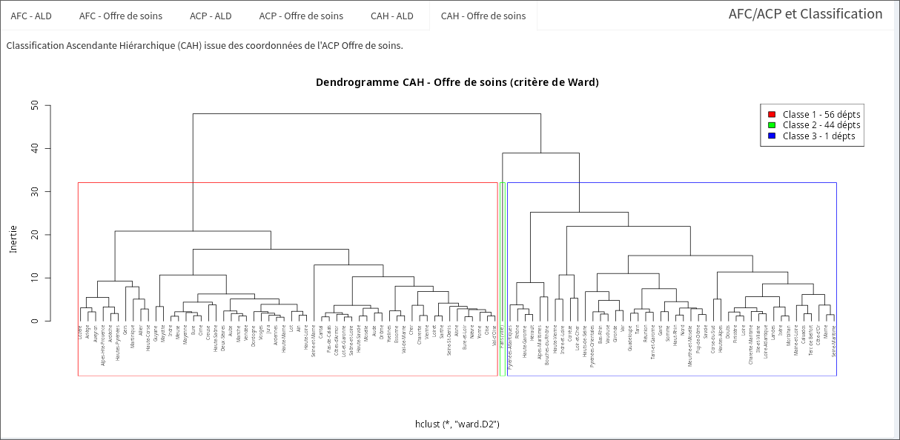
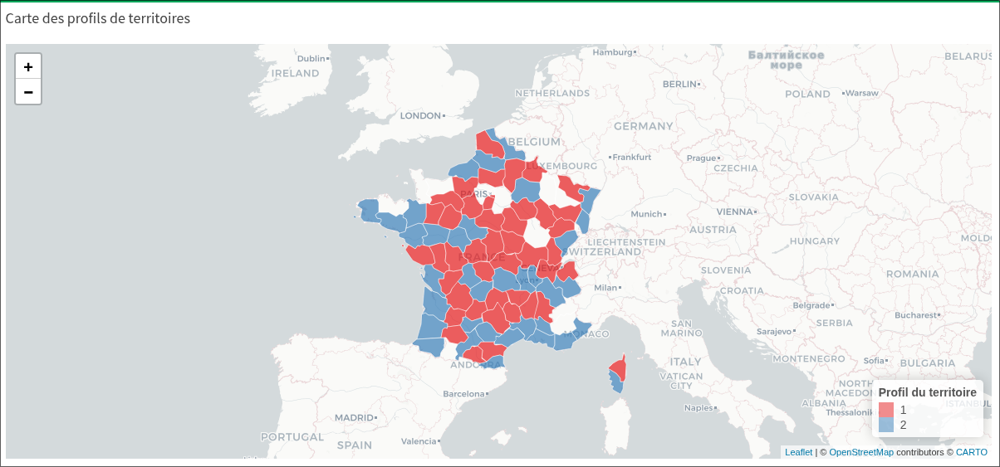
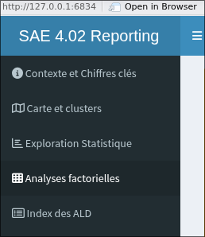
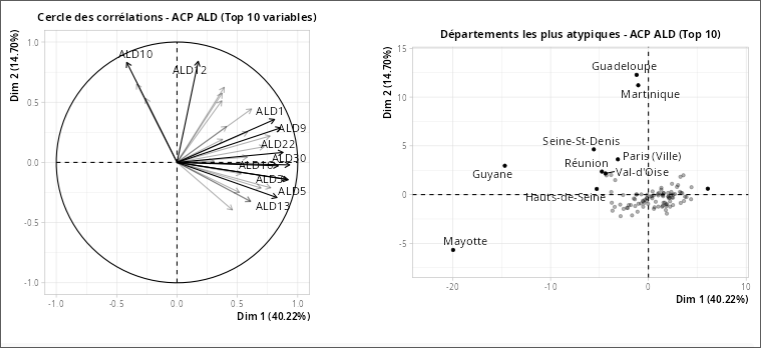

Reporting d'analyse multivariée - Dashboard R Shiny
Production d'un rapport d'analyse multivariée (ACP, CAH) rendu interactif via une application R Shiny : de l'exploration statistique jusqu'à la narration analytique à destination d'un public non-statisticien.
Contexte & objectifs
Cette SAE s'inscrit dans les compétences Analyser et Valoriser. L'objectif était de mener une analyse multivariée complète sur un jeu de données tabulaire, puis de rendre les résultats accessibles via une interface Shiny interactive - combinant rigueur statistique et clarté de communication.
L'application devait permettre à un utilisateur sans bagage statistique d'explorer dynamiquement les composantes principales, les regroupements et les interprétations métier.
- Réaliser une ACP et une CAH sur un jeu de données tabulaire avec FactoMineR
- Interpréter les composantes et dendrogrammes dans le contexte métier du jeu de données
- Concevoir une interface Shiny réactive (onglets, contrôles, sorties ggplot2)
- Intégrer narration analytique et graphiques dans un rapport HTML cohérent
Ce que j'ai fait
Nettoyage et préparation du jeu de données : gestion des valeurs manquantes, normalisation, recodage des variables catégorielles.
Analyse en Composantes Principales (ACP) avec FactoMineR : sélection des axes, cercle des corrélations, biplot individus/variables.
Classification Ascendante Hiérarchique (CAH) : choix de la métrique de dissimilarité, coupe du dendrogramme, profil des classes.
Développement de l'application Shiny : architecture en modules, réactivité des sorties graphiques, mise en page responsive.
Extrait de code
# Préparation des Tables AFC
tab_contingence_ALD <- ALD %>%
select(departement_nom, ald, effectif) %>%
pivot_wider(names_from = ald, values_from = effectif, values_fill = 0) %>%
as.data.frame()
rownames(tab_contingence_ALD) <- tab_contingence_ALD$departement_nom
tab_contingence_ALD <- tab_contingence_ALD[, -1]
Captures & livrables




Captures d'écrans issues de l'application rendue
Compétences mobilisées
Préparation et normalisation du jeu de données en vue de l'analyse multivariée.
ACP, CAH, interprétation des axes factoriels et des classes dans un contexte métier réel.
Restitution interactive via Shiny et narration analytique accessible à un public non-expert.
Architecture applicative Shiny : modules, réactivité, mise en page, intégration ggplot2.
Bilan & réflexion
Points forts
- Bonne maîtrise de la chaîne ACP → interprétation → restitution
- Interface Shiny ergonomique et réactive
- Narration analytique claire pour un public non-statisticien
Points à améliorer
- Aller plus loin dans la validation des clusters (indice de Silhouette)
- Améliorer ma compréhension des résultats modélisés, en compléments de mes compétences informatiques